The cemetery at Modena · Copenhagen
Aldo Rossi was an Italian postmodernist architect, active from the 1950s to the 1980s. Rossi held a poetic attitude towards architecture, and his finished work sits in a borderland between recollection, dream and reality. The cemetery at Modena was completed in 1971. Rossi plays with the cemetery as a demonstration of power, combined with a fragmented and poetic entrance to the realm of the dead.
Shown here is a study for an urn house, in drawings and models, based on an analysis of Aldo Rossi's cemetery at Modena. The urn house is a small and human place, one that resists power as something dominating — otherwise so often typical of a religious site. The openings in the façade are filled by urns. The roof is thick, to draw attention downwards, towards the underworld. The little house is labyrinthine, to unsettle the sense of up and down: a passage in the house of the dead.
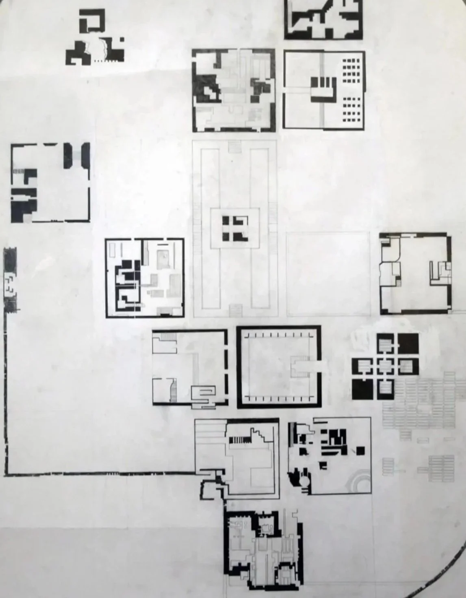
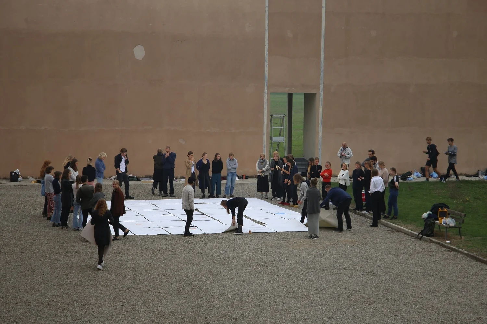
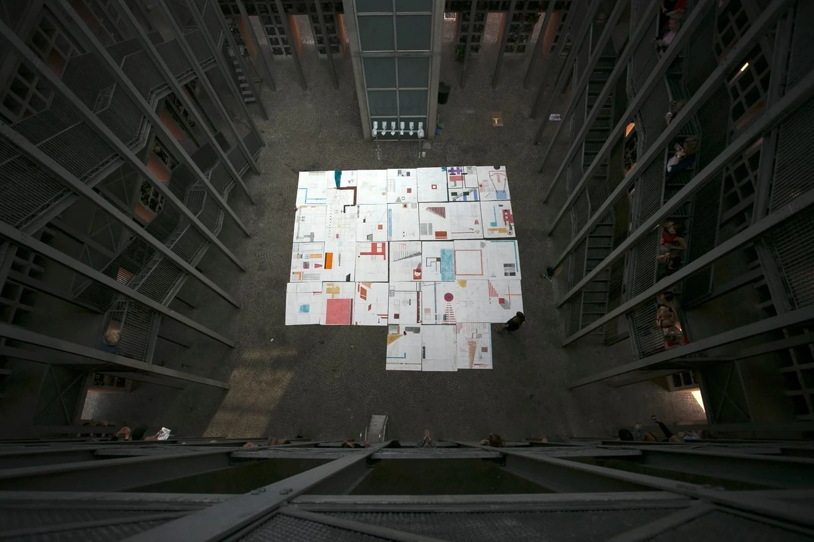
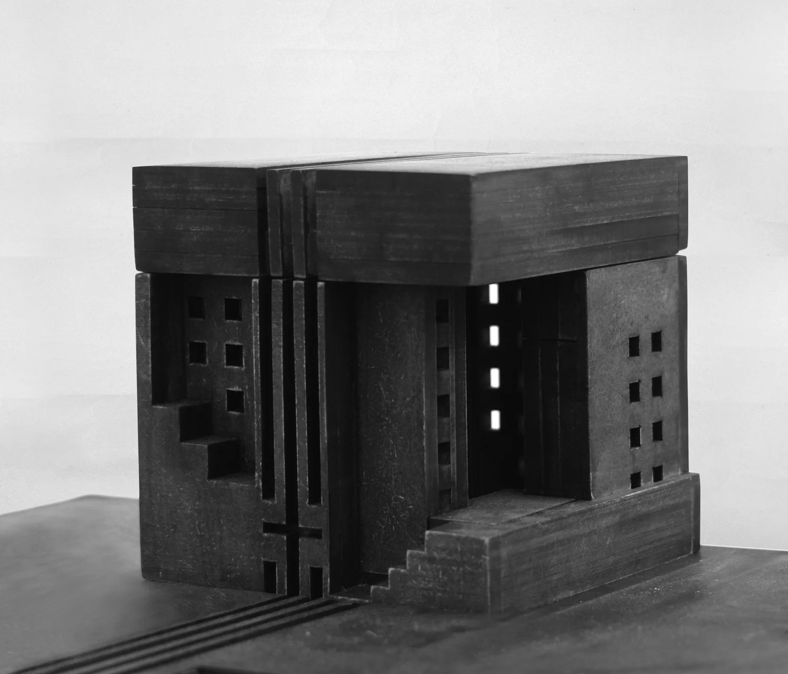
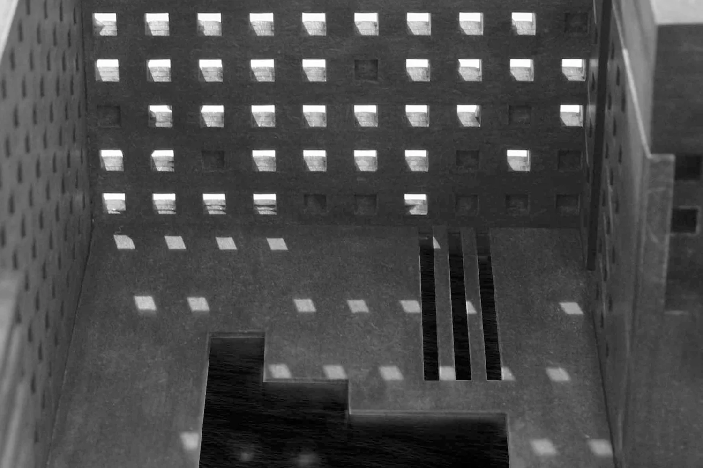
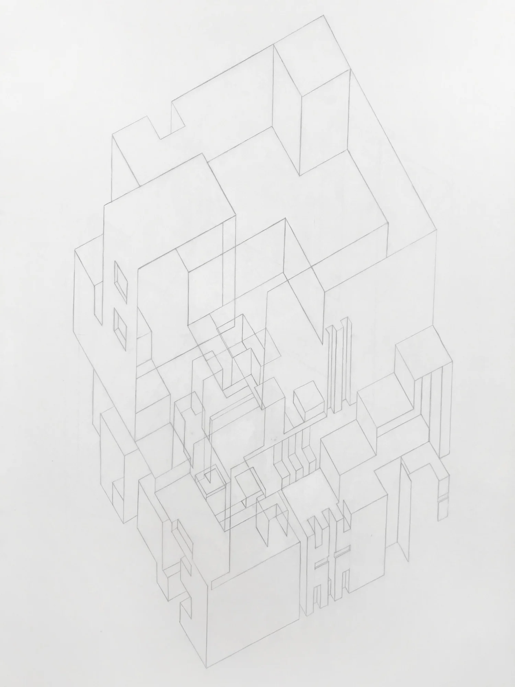
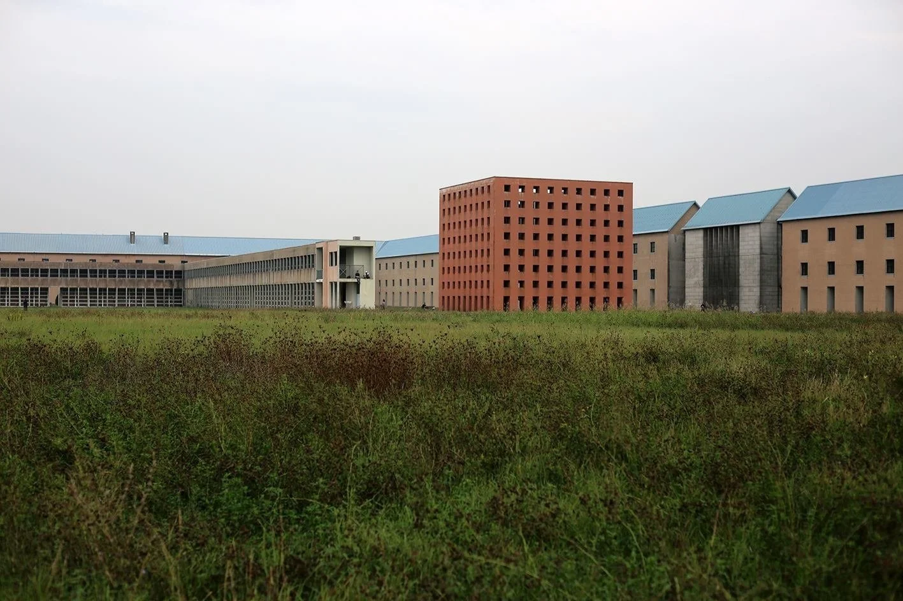
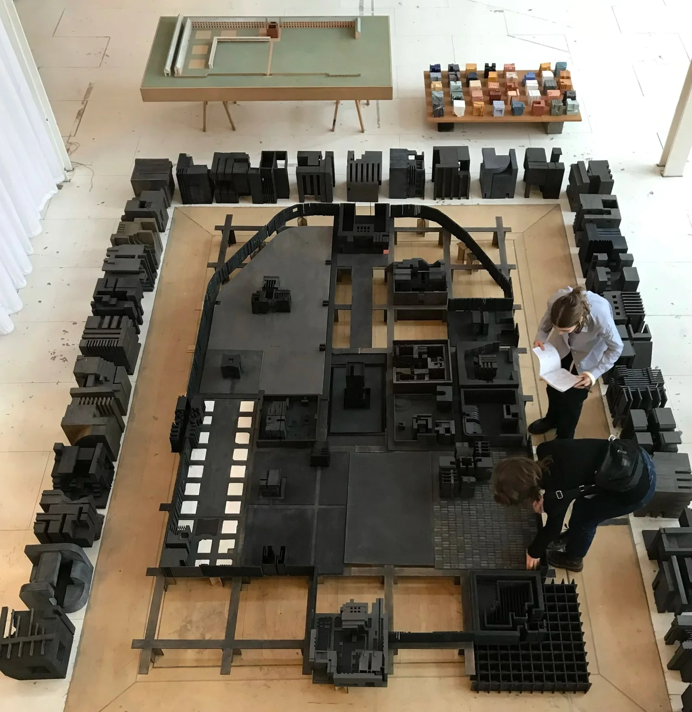
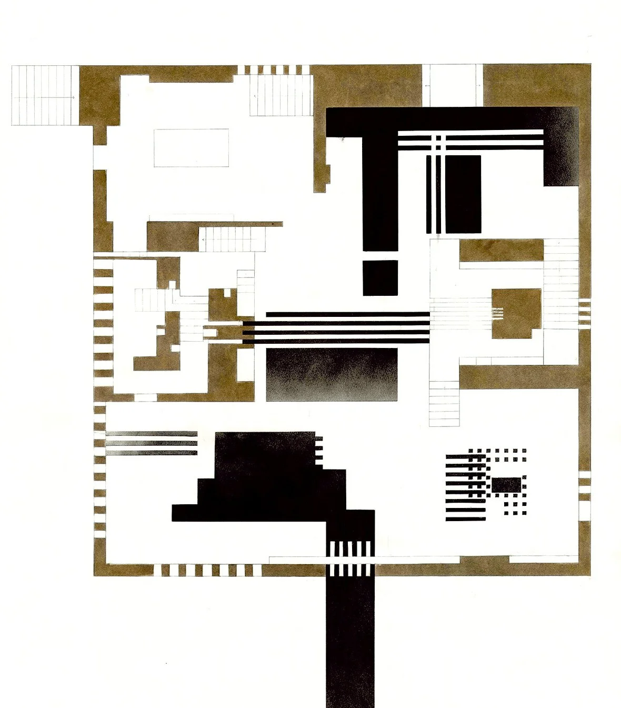
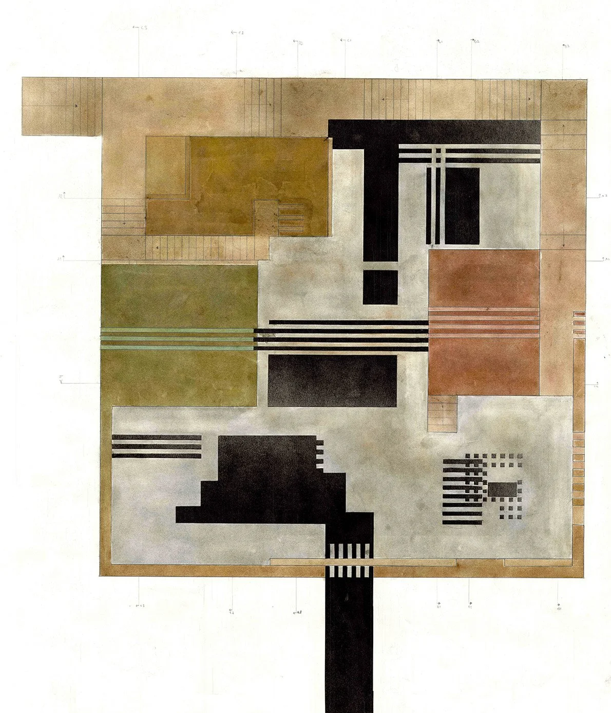
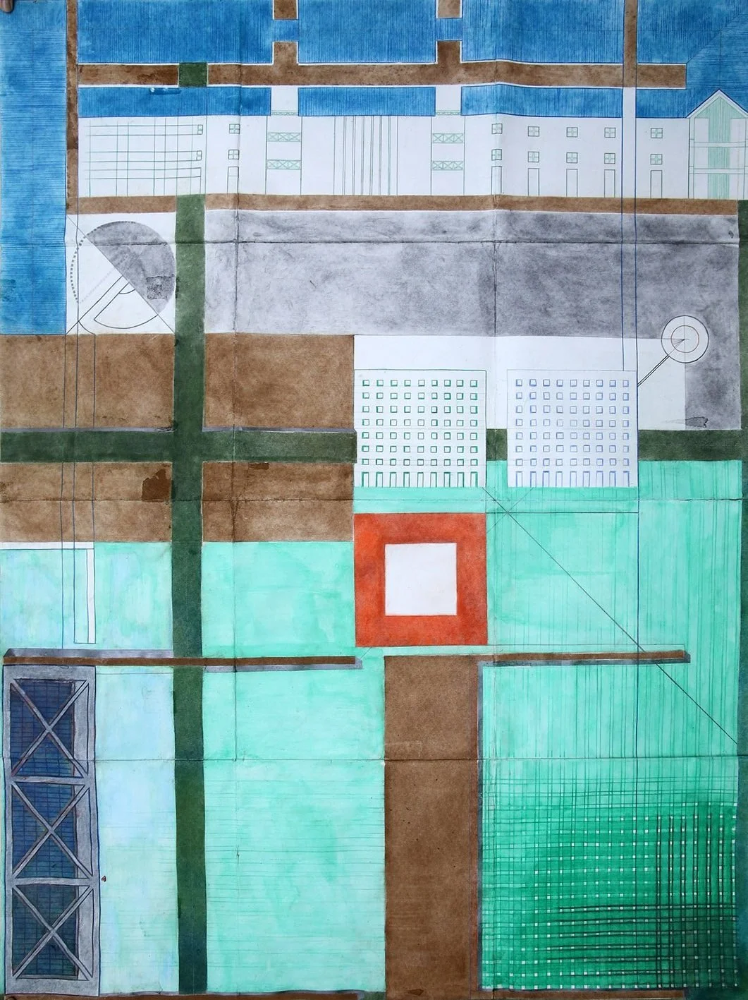
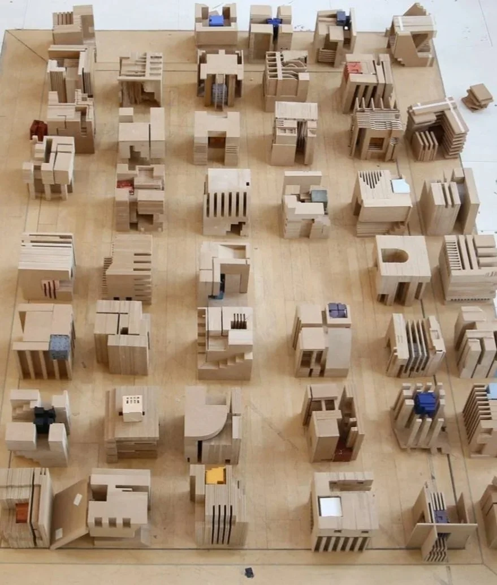
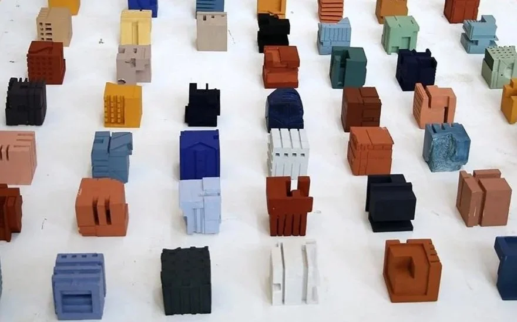
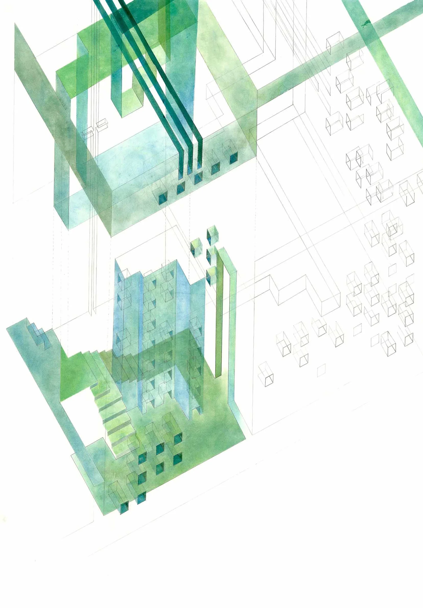